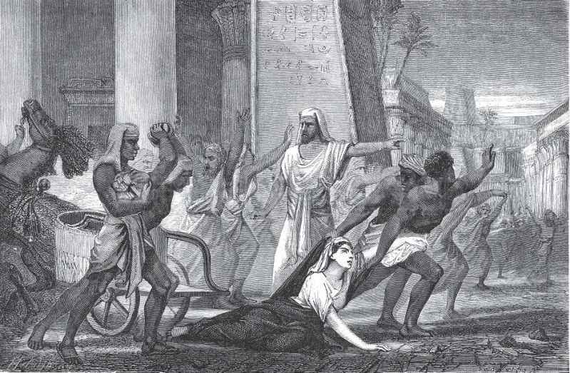

从以上论述中我们不难发现，希腊数学有两个显著的特点，一是抽象化和演绎精神，二是它与哲学的关系非常密切。正如M.克莱因所言，埃及人和巴比伦人所积累的数学知识就像空中楼阁，或由沙子砌成的房屋，一触即溃；而希腊人建造的却是一座座坚不可摧的、永远的宫殿。另外，如同音乐爱好者将音乐视为结构、音程和旋律的组合一样，希腊人也将美看作秩序、一致、完整和明晰。柏拉图声称，“无论我们希腊人接受什么东西，我们都要将其改善并使之完美无缺。”
柏拉图喜爱几何学，亚里士多德则不愿把数学和美学分开，他认为秩序和对称是美的重要因素，这两者都不难在数学中找到。事实上，古希腊人认为球是一切形体中最美的，因而它是神圣的，也是善良的。圆也与球一样为人们所喜爱，因而天上那些代表万劫不变的永恒秩序的行星均以圆为它们的运动轨迹，而在不完善的大地之上，则以直线运动居多。正因为数学对希腊人有如此这般美丽的吸引力，才使他们坚持探索那些超出理解自然所需要的数学定理和法则。
不仅如此，希腊人还是天生的哲学家，他们热爱理性，爱好体育和精神活动，这就使得他们与其他民族有了重要的区别。从公元前6世纪米利都的泰勒斯到公元前337年柏拉图去世，这段时期是数学和哲学的第一个蜜月期，数学家和哲学家甚至同为一个人。说起希腊哲学，它的一个显著特点就是把整个宇宙作为研究对象，也就是说，哲学是包罗万象的。这与那时候数学的发展处于初级阶段不无关系，数学家们只能讨论简单的几何学和算术，对运动和变化无能为力（因此才有了芝诺的悖论），他们只好以哲学家的身份另外担起解释者的重任。
可是，随着希腊诸城邦被马其顿帝国控制（公元前338年），希腊的数学中心从雅典转移到了地中海南面的亚历山大城，数学和哲学的蜜月期随之结束。尽管如此，这一曾经有过的奇妙结合还是催生了一部堪称古代世界逻辑演绎最高结晶的著作——欧几里得《几何原本》。这部书的意义不仅在于贡献了一系列美妙的定理，更有价值的是孕育、演绎出一种理性的精神。可以说，后世的一代又一代欧洲人正是从这部著作里学会了如何进行无懈可击的推理。谁又能否认，西方社会由来已久的民主和司法制度也与之有关呢？
由于希腊当时有许多原住民和被文明吸引过来的外来奴隶，他们负责耕种土地、收获庄稼，从事城邦里各项具体的劳动和杂务，使得许多人有时间从事唯理主义的思考和探讨。但这样的生活在物质并非十分富足的情况下终归不会持久，讲究实效的罗马最后取代了精神至上的希腊，正如很久以后，热衷于物质进步的美国取代了理想主义的欧洲一样。公元415年，人类第一个有记载的女数学家希帕蒂娅（Hypatia，约370—415）在她的故乡亚历山大被一群暴徒残杀，标志着希腊文明难以避免衰败的结局。

作于1866年的素描《希帕蒂娅之死》
希帕蒂娅的父亲是最权威的《几何原本》版本的注释者，她本人也是丢番图的《算术》和阿波罗尼奥斯的《圆锥曲线论》的注释者，还是亚历山大新柏拉图主义哲学的领袖，据说以其美貌、善良和非凡的才智吸引了大批崇拜者。可惜的是，希帕蒂娅的所有注释本均已遗失，我们甚至不知道她写过哪些哲学著作，仅存的只有学生写给她的信件，信中向她讨教如何制造星盘和水钟的问题。
在希腊文明衰落之后，无论是在罗马统治时期，还是在漫长的中世纪（后面两章我们将会看到，这为几个东方古国再度登上世界历史舞台提供了契机），数学与哲学都渐行渐远。直到16世纪，“意大利人文主义思想强调了毕达哥拉斯和柏拉图的数学传统，世界的数字结构再次受到重视，并取代了曾使之黯然失色的亚里士多德传统”（罗素语）。而到了17世纪，随着微积分学的诞生，哲学和数学再次靠近，不过那时哲学的主要研究目标已缩小成“人怎样认识世界”了。